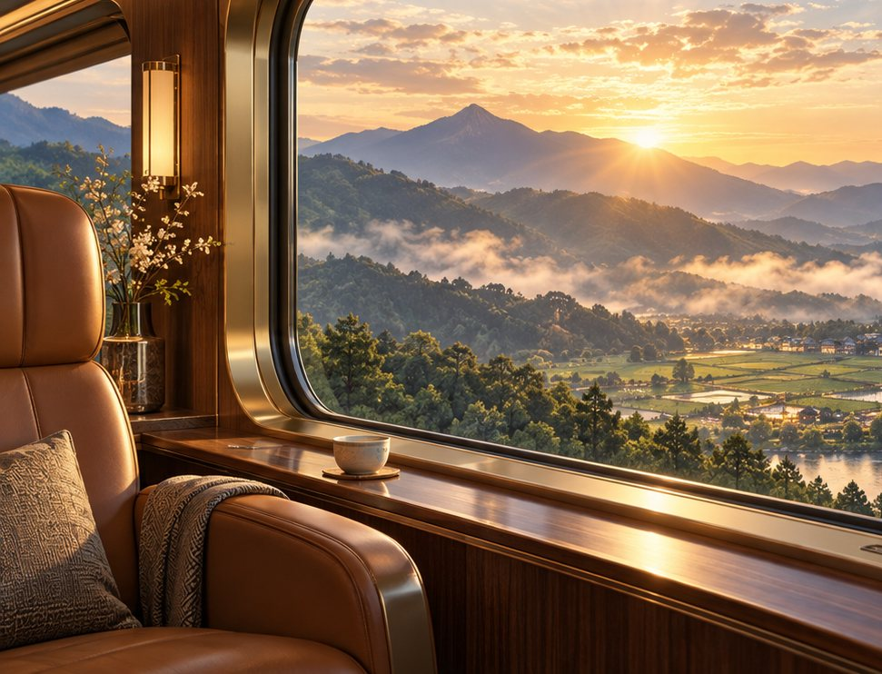

特別なあなたへ、特別な旅のご案内。
旅への招待状
あなたの原点から、まだ見ぬ会社の未来へ。
LINEで、ミオ先生との対話をしながら、自分の原点や、社員・会社のこれからを振り返る7日間。
経営者限定参加無料7日間

A MOMENT FOR YOU
会社と社員のために、走り続けてきたあなたへ。ここまでの歩みを振り返り、これからの景色を、ゆっくり思い描く時間を。
何を大事にしてきたのか。これから、何を大事にしていくのか。
ABOUT THE JOURNEY
7日間、毎日少しずつ。LINEでミオ先生から届く問いに答えながら、自分の原点や、社員・会社のこれからを振り返っていきます。
答えを教えてもらうのではなく、対話を通して、自分の中にある想いに気づいていく。それが、PRESIDENT JOURNEYです。
7 DAYS WITH MIO
LINEにミオ先生から問いが届く
自分の言葉で答える
対話を重ねる
少しずつ、自分と会社の未来が見えてくる
YOUR NEXT SCENERY
社員一人ひとりと、その家族のこれから。会社として、どんな支えを届けたいだろう。
旅の中で見えてきた想いを、社員の人生を支える「仕組み」へ。
YOUR GUIDE
ミオ先生が、答えを決めることはありません。一つずつ問いかけながら、社長自身の中にある想いを、一緒に整理していきます。
LINEで届く問いに答えるだけ。ご自身のペースで、旅を進められます。
PRESIDENT JOURNEY
社員と、会社の未来を想うあなたへ。
次の一歩は、あなたの想いから。
SPECIAL INVITATION
経営者限定｜参加無料｜7日間
あなたのペースで、ここから。
旅のチケット
スマホのカメラで読み取れます
スマートフォンで始める、社長のための7日間の旅。
REALIZECLUB
運営：株式会社REALIZE OS
PRESIDENT JOURNEY経営者限定｜参加無料｜7日間